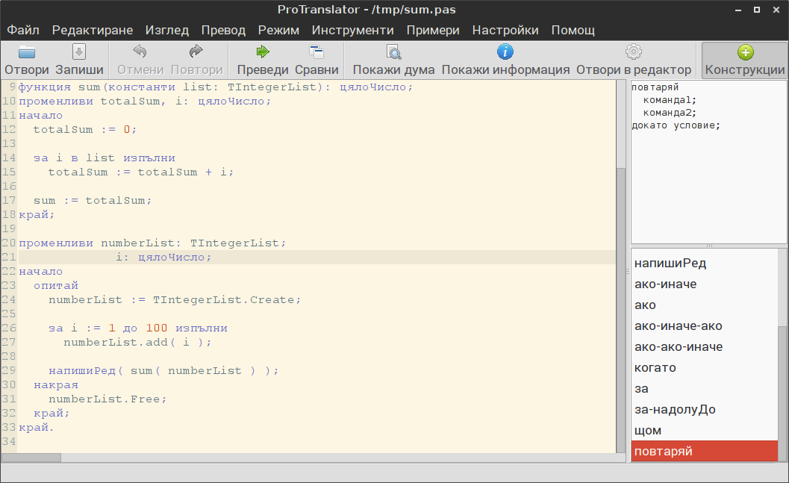

ProTranslator
ProTranslator е програма, която позволява превода на програмен код
на български и по този начин улеснява разбирането на кода от ученици,
тепърва започващи да програмират. Интерфейсът на програмата е пригоден
за начинаещи в програмирането. Изключително полезно за хора с ниски или
никакви познания по английски език.
Екран на програмата

Възможности на програмата
- превод от даден програмен език
на български и обратно на програмен език. Командите и техният превод се
зареждат от външен файл, така че лесно може да се
добавят нови или да се променят съществуващите.
- показване на значението на ключова дума - може
да
бъде показано значението на всяка ключова дума от програмата, общият и
вид и описание на действието и. Това улеснява разбирането на
програмата, дори без тя да е преведена.
- показване на общият вид на команди и обяснението
им - отстрани
има списък с ключови думи, и при цъкване на всяка от тях може да се
види общият и вид и описание на действието и. Това служи като удобен
справочник, който е винаги под ръка.
- вмъкване на готови конструкции
- с двойно щракване в същия списък лесно може да бъдат вкъкнати в
програмата готови конструкции.
Конструкциите се зареждат от външен файл, така че лесно може да се
добавят нови.
- възможност за итерактивно въвеждане на параметрите
на
дадена команда и нагледно представяне как те ще изглеждат, приложени в
командата, както и обяснение какво ще е действието на командата с така
попълнените параметри.
- маркиране на избраната дума - удобно е
за проверка къде е исползвана дадена променлива
- отваряне на файл в редактора по подразбиране
- така че файлът, който се разглежда в преводача да може да бъде
отворен в средата за програмиране и компилиран там
- стартиране на програмата с указан файл -
за да е възможно и обратното действие - от средата за програмиране да
бъде отворен преводача и в него зареден съответният файл
- в статус реда има обяснение за
командата, върху която е
курсора
- Drag & Drop - възможно е файловете
да бъдат отваряни чрез просто провлачване до програмата
- самият преводач е отделна, конзолна програма,
която превежда файлове при подаването им в командния ред, така че може
да бъде използвана за автоматизиран превод на много файлове в пакетен
(Batch) режим
Примерни случаи на приложение
- учителят предлага на учениците да съставят програма, като
използват готовите преведени на български инструкции. Това им помага да
си представят какъв ще е алгоритъма на програмата и каква ще е
поредицата от стъпки за изпълнението им. След това тази програма се
превежда на дадения програмен език, за да се види пряката връзка между
алгоритъма и съответните команди в езика.
- учениците зареждат дадена готова програма и след това си
я
превеждат, за да осмислят действието и. Има и режим "Сравнение", в
който гледат един до друг програмата и превода, за да добият представа
коя команда как се превежда.
- учениците зареждат дадена готова програма и след това
цъкат върху
инструкциите, които не познават, за да видят общият вид и действието им.
- учениците създават програма директно на даден програмен
език, като използват готовите конструкции. Списъкът с всички готови
конструкции им служи за справочник, защото могат да видят общият вид и
действието на всяка команда от него, без да се налага тя да бъде
добавяна в програмата.
- докато разглеждат дадена програма, активират "Покажи
дума", за да
видят всички срещания на тази дума в програмата и да осмислят
употребата и.
- накрая с бутона "Отвори в редактор" я зареждат в
съответната среда за програмиране, за да я компилират и изпълнят.
Директории
- Sources - съдържат изходните кодове на
конзолният преводач и на графичната част, както и изходния код на
инсталатора
- Setup - съдържа готовата за инсталация
програма
- Documentation - тук е документацията за
програмата
Допълнителна информация
Сайт на
програмата в Интернет